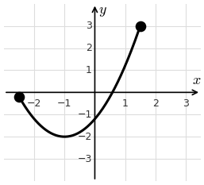
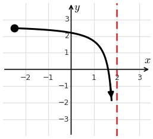
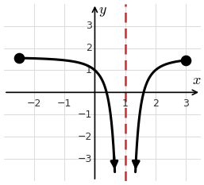

Lesson 25: The Extreme Value Theorem
The Extreme Value Theorem
Both requirements matter: the function must be continuous, and the interval must be closed.
Case 1: Continuous, closed interval. The absolute maximum is at an endpoint and the absolute minimum is at a critical number. Both exist, because both requirements are satisfied.

Case 2: Continuous, but not closed. On \([-2.5, 2)\) the absolute maximum is at the left endpoint, but there is no absolute minimum: the function decreases forever near the vertical asymptote.

Case 3: Closed, but not continuous. On \([-2.5, 3]\) the absolute maximum is at an endpoint, but there is no absolute minimum: the function decreases forever near the vertical asymptote.

Explain why the Extreme Value Theorem doesn’t apply to \(f(x) = \dfrac{1}{x - 1}\) on \([-18, 18]\).
The interval is closed, but the function is not continuous on it. It has a vertical asymptote at \(x = 1\), which is inside the interval.
Explain why the Extreme Value Theorem doesn’t apply to \(f(x) = \dfrac{1}{x - 7}\) on \([-4, 4)\).
The vertical asymptote \(x = 7\) is not in the interval, so the function is continuous there. But \([-4, 4)\) is not a closed interval.
Sample Exam Problems
Explain why the Extreme Value Theorem doesn’t apply to \(f(x) = \dfrac{1}{x}\) on \((4, 5)\).
The function is continuous there, but \((4, 5)\) is not a closed interval.
Explain why the Extreme Value Theorem doesn’t apply to \(f(x) = \dfrac{1}{x}\) on \([-5, 5]\).
The interval is closed, but the function is not continuous on it: it is undefined at \(x = 0\).